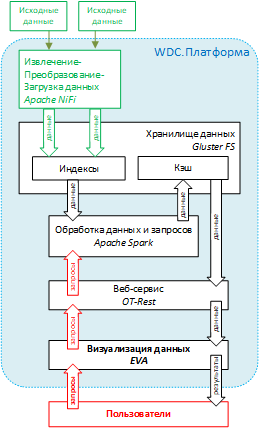
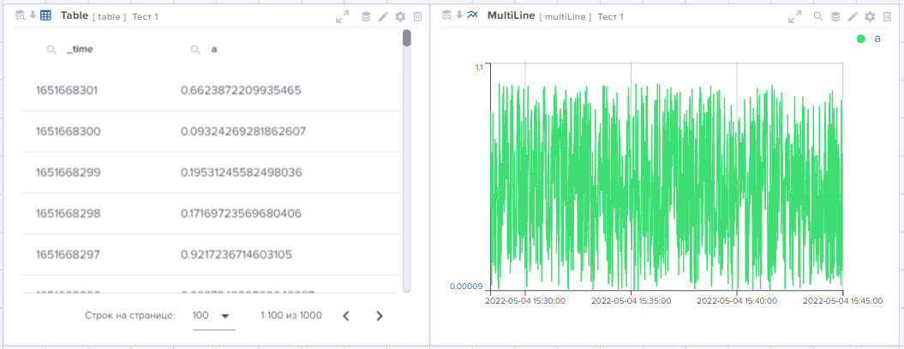
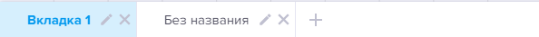

EVA
Введение в EVA
EVA – это web-интерфейс WDC.Платформы, предназначенный для визуализации результатов обработки большого объема данных (Big Data) и настройки логики взаимодействия между отдельными компонентами визуализации данных.
Работа ведётся на интерактивной информационно-аналитической панели – дашборде.
Дашборд – совокупность интерактивных компонентов визуализации данных и логики взаимодействия между ними.
Данные на дашборд загружаются на основе подготовленных пользователем запросов – источников данных.
Источник данных – сформированный пользователем запрос к данным, визуальное представление которых он хочет получить на дашборде. Запрос создаётся пользователем на высокоуровневом языке OTL (см. Руководство пользователя "Команды языка OTL").
Данные, выбранные с помощью источников данных, отображаются в визуализациях.
Визуализации – интерактивные компоненты визуализации данных различных типов, размещённые на дашборде.
EVA поддерживает компоненты двух типов:
-
Компоненты отображения данных:
-
Таблица
-
Мультилинейный график
-
Карта
-
Круговая диаграмма
-
Граф
-
Кустовая схема
-
Диаграмма Гантта
-
Плитка
-
Изображение
-
Число
-
Граф_old
-
Тепловая карта
-
Single Value
-
Ползунок
-
-
Компоненты, реализующие логику взаимодействия между пользователем и компонентами отображения данных:
-
Выпадающий список
-
Выбор времени
-
Кнопка
-
Текстовый блок
-
Токен – внутренняя переменная для дашборда, значение которой присваивается в зависимости от действий пользователя.
Токены используются:
-
в источниках данных – для фильтрации данных, передаваемых на дашборд, и получения таким образом в интерактивных компонентах новых данных;
-
в событиях – как для модификации отображения данных в интерактивных компонентах, так и для модификации свойств самих интерактивных компонентов.
Событие – логика взаимодействия между компонентами визуализации данных, реализуемая в ответ на действие пользователя.
Место EVA в общей схеме компонентов WDC.Платформы

WDC.Платформа является универсальной системой сбора, аналитики и визуализации больших объемов машинных данных (machine-generated data).
В её состав входит ряд компонентов, специализирующихся на выполнении определённых функций:
-
Извлечение-Преобразование-Загрузка.
Apache Nifi
В систему поступают разноформатные данные. С помощью Apache Nifi они обрабатываются, приобретают единую структуру и получают необходимые атрибуты для дальнейшего использования.
-
Хранилище данных.
GlusterFS
Первоначально обработанные данные поступают в хранилище GlusterFS. Информация размещена в распределенном и реплицированном виде для обеспечения надежного хранения и отказоустойчивости системы:
-
индексированные данные – индексы;
-
оперативные данные для быстрого доступа – кэш; оперативные данные за время, заданное в EVA, и результаты поисковых запросов.
-
Обработка данных.
Apache Spark
Приложение Apache Spark выполняет параллельную обработку данных на основании полученных из Базы данных поисковых запросов и выгружает запрошенные данные в кэш Хранилища данных.
-
База данных.
PostgreSQL
База данных обеспечивает обмен служебными сообщениями между приложениями Apache Spark и OT-Rest, проводит аудит поисковых запросов и хранит всю информацию об инструментах визуализации приложения EVA.
-
Взаимодействие пользовательского интерфейса и серверной части
ОТ.REST
ОТ.REST осуществляет предварительную обработку поисковых запросов и передаёт их на дальнейшую обработку в приложение Apache Spark. Данные, подготовленные по запросам, перемещает из Хранилища в EVA для визуализации.
-
Визуализация данных.
EVA
Интерактивная среда разработки EVA позволяет разрабатывать и выполнять запросы к различным источникам данных, обрабатывать и визуализировать данные.
EVA создаёт Локальное хранилище на компьютере пользователя для оперативного хранения используемых им инструментов EVA (дашбордов и проч.).
Функциональные модули EVA
В EVA могут быть предоставлены для работы следующие модули:
-
Конструирование дашбордов – инструмент предназначен для разработки и использования сложных интерактивных дашбордов, позволяющих визуализировать данные в различных форматах представления.
-
Исследование данных – инструмент для отладки запросов к данным. С его помощью Вы можете создавать запросы, отлаживать их и визуализировать результаты выполнения в различных интерактивных компонентах.
-
Вопрос-Ответ – инструмент ведения чек-листов.
Авторизация и ролевая модель
Уровни доступа пользователей в EVA представлены:
-
ролями – доступ к привилегиям, где привилегии представляют собой наборы функциональности модулей;
-
группами – доступ к дашбордам и индексам.
Пользователям назначаются роли и группы:
-
Доступ к привилегиям назначается через роли. Т.е. для роли определяется набор привилегий. После чего пользователю назначается роль с заданным набором привилегий.
-
Доступ к дашбордам и индексам назначается через группы. Т.е. в группе определяется набор дашбордов и/или набор индексов. А затем пользователю назначается группа.
Набор ограничений зависит от используемого модуля:
-
В модуле "Конструирование дашбордов" предусмотрены ограничения на доступ пользователя к привилегиям, дашбордам и индексам.
-
В модуле "Исследование данных" предусмотрено ограничение на доступ пользователя к индексам. Он определяется через группы. Т.е. сначала в системе последовательно определяются индексы, доступные для работы в модуле, и прикрепляется к группе. А затем пользователю назначается группа с заданным набором индексов.
-
В модуле "Вопросы и ответы" наложены ограничения на доступ пользователя к привилегиям.
Остановимся подробнее на создании структуры доступа и определим соответствие между привилегиями и функциями модулей.
Создание структуры доступа
Изначально в системе настроен пользователь – admin (пароль: 12345678). Он обладает максимальным уровнем доступа ко всей функциональности и всем данным системы.
Используйте этот логин для входа в систему.
Важно!
В целях повышения безопасности системы пароль рекомендуется изменить.
На Главной панели управления EVA справа нажмите иконку, активирующую режим управления пользователями, и выберите пункт меню "Редактировать":
Разработка структуры доступа включает следующие этапы:
-
Назначение привилегий для роли.
Создание ролей
На вкладке "Роли" используйте кнопку
 для перехода в окно "Создать
новую роль", в котором укажите название роли и нажмите кнопку "Создать".
для перехода в окно "Создать
новую роль", в котором укажите название роли и нажмите кнопку "Создать".
Визуализация привилегий
Перейдите на вкладку "Привилегии" и воспользуйтесь кнопкой
для перехода в окно "Создать
новую привилегию", в котором укажите название привилегии, обеспечивающей доступ
к функциональности.
Набор привилегий, обеспечивающих доступ пользователя к функциональности, представлен в таблице ниже:
| Привилегия | Набор контролируемой функциональности |
|---|---|
| Вся функциональность EVA | |
| admin_all | Доступ ко всей функциональности всех модулей. Именно эту привилегию имеет пользователь admin. |
| Модуль "Конструирование дашбордов" | |
|---|---|
| admin_all | Доступ ко всей функциональности модуля. |
| managegroup | Действия на основной странице модуля во вкладке "Группы": Создание групп . Административные действия над группами, созданными другими пользователями: редактирование информации о группах , удаление , экспорт-импорт групп  . . |
| managedash | Действия на основной странице модуля во вкладке "Дашборды": Создание дашбордов . Административные действия над дашбордами, созданными другими пользователями: редактирование информации о дашбордах , удаление , экспорт- импорт дашбордов . |
| editdash | Доступ на редактирование дашбордов, разработанных другими пользователями. |
| Модуль "Вопрос-Ответ" | |
|---|---|
| admin_all | Создание, редактирование и удаление чек-листов. |
| admin_quiz |
Ниже, в разделе "Все роли", назначьте привилегию ранее созданной роли, сделав рядом с ролью отметку, и нажмите кнопку "Создать".
Далее переходим к созданию пользователей.
Настройка пользователей EVA
На вкладке "Пользователи" нажмите кнопку
и создайте нового пользователя:
-
Укажите логин и пароль.
-
Назначьте роли.
В разделе "Управление ролями" отметьте их и нажмите кнопку "Добавить роли пользователю".

-
Назначьте группу.
В разделе "Управление группами" отметьте их и нажмите кнопку "Добавить группы пользователю".
-
Завершите процедуру создания нового пользователя кнопкой "Создать".
Создание групп
Важно!
В модуле "Конструирование дашбордов" работа с дашбордами ведётся только через группы. Поэтому создание групп, а также создание дашбордов и включение их в группы можно выполнить непосредственно в модуле.
Перейдите на вкладку "Группы" и воспользуйтесь кнопкой
для перехода в окно "Создать
новую группу", в котором:
-
введите название группы;
-
определите цветовую идентификацию группы.
-
добавьте пользователей в группу – на вкладке "Все пользователи" проставьте галочки напротив нужных пользователей и подтвердите выбор нажатием на кнопку "Добавить пользователя", после чего список выбранных пользователей появится на вкладке "Пользователи группы";
-
добавьте дашборды, которые будут доступны пользователям группы – на вкладке "Все дашборды" (настройка выполняется аналогично предыдущему описанию);
-
добавьте индексы, доступные пользователям группы для работы – на вкладке "Все индексы".
На всех вкладках доступен поиск.
Если Вы ошибочно добавили в группу пользователя, дашборд или индекс, то удаляемую запись отметьте галочкой и нажмите соответствующую кнопку.
Для завершения процедуры создания группы нажмите на кнопку "Создать" внизу окна.
На вкладке "Группы" ранее созданные группы можно редактировать и удалять .
Начало работы
Перед тем, как приступить к работе в EVA, убедитесь, что:
-
Данные для Вашей работы загружены в Хранилище данных.
-
Вам предоставлен доступ к EVA.
После входа в EVA на Главной странице Вы увидите Главную панель
 :
:

По клику на иконке справа откроется меню "Профиль":

Рассмотрим инструменты подробнее:
-
 – режим управления
доступом пользователей:
– режим управления
доступом пользователей:-
пользователь с привилегией admin_all имеет права на выполнение этого действия для всех пользователей EVA;
-
пользователь с другим уровнем доступа может просматривать информацию о предоставленных ему правах и редактировать свой пароль.
-
-
– режим выбора имеющейся темы оформления EVA, а также создания новой темы, её редактирования и удаления.
 – после нажатия на эту
иконку на экране появится окно, предназначенное для настройки своей темы.
Под полем Название темы находится краткое Руководство, в котором
приведён перечень настраиваемых элементов приложения и какие поля окна
управляют их цветовым оформлением.
– после нажатия на эту
иконку на экране появится окно, предназначенное для настройки своей темы.
Под полем Название темы находится краткое Руководство, в котором
приведён перечень настраиваемых элементов приложения и какие поля окна
управляют их цветовым оформлением.Созданную Вами тему в дальнейшем можно редактировать и удалить.

-
 – выход из программы и
предоставление возможности вернуться, например, под другим идентификатором
пользователя.
– выход из программы и
предоставление возможности вернуться, например, под другим идентификатором
пользователя.
В настоящем Руководстве будут рассмотрены следующие модули:
-
Конструирование дашбордов – инструмент для создания и использования сложных интерактивных дашбордов, позволяющих визуализировать данные в различных форматах представления.
-
Исследование данных – инструмент для отладки запросов к данным. С его помощью Вы можете создавать запросы, отлаживать их и визуализировать результаты выполнения в различных интерактивных компонентах.
Кроме того, обратите внимание на информационную составляющую – система выводит на заголовок вкладки браузера названия модулей и дашбордов, с которыми Вы работаете, а также сохраняет ссылки на них в истории браузера.
А теперь начнём знакомство с модуля EVA "Исследование данных".
Исследование данных
Рассмотрим функциональные возможности модуля "Исследование данных" подробнее.

Область поиска данных предназначена для ввода запроса к данным и выполнении по запросу поиска данных за фиксированный период времени.
Период времени можно задать в раскрывающемся списке, расположенном слева от кнопки "Поиск". По умолчанию определён период "За всё время".
Окно поиска, предназначенное для формирования запроса, можно настроить. Для этого под окном поиска размещён раскрывающийся список "Настройки поиска", в котором задаются:
-
автоматический перенос вводимого текста запроса на следующую строку при активном переключателе "Автоперенос на новую строку";
-
количество строк, видимых в окне.
Для формирования запроса используется высокоуровневый язык OTL. Все команды – подробное описание, синтаксис и примеры использования в запросах – представлены в Руководстве "Команды языка OTL".
Ниже мы остановимся только на базовом наборе команд и разберём пошагово процедуру создания запросов с их использованием.
Подготовленный запрос запускается на выполнение по кнопке "Поиск" или сочетанию клавиш [Ctrl+Enter].
Имеется возможность вывести для работы в окно поиска ранее введённые запросы, для этого следует воспользоваться кнопкой "Шаг назад" необходимое количество раз, для возврата к более новым запросам используется кнопка "Шаг вперёд".
Для удаления запроса и отображённых данных используется кнопка "Сбросить".
Область просмотра результата выполнения поиска. В ней активна следующая функциональность:
-
События – просмотр результатов выполнения поиска:
-
поля данных, участвующих в запросе – перечень идентификаторов с указанием их типов выводятся слева автоматически после выполнения запроса;
-
значения поля данных, количество и процент их повторений – эта информация выводится по полю, выбранному с помощью "мыши".
-
-
Статистика – данные выводятся в табличном виде.
-
Визуализация – здесь можно изменить представление полученных данных, кликнув на иконку с нужным для работы интерактивным компонентом. После чего результаты будут интерпретированы в выбранный Вами формат визуализации данных.
-
Отчет – формирование отчёта.
-
Скачать – скачивание сформированного отчёта в предпочтительном формате – xlsx или csv.
Настройки для запроса заданы по умолчанию. Просмотреть и изменить их можно по
копке  . Среди настроек доступны
универсальные настройки (основные и дополнительные) и уникальные настройки,
используемые для интерактивных компонентов конкретных видов.
. Среди настроек доступны
универсальные настройки (основные и дополнительные) и уникальные настройки,
используемые для интерактивных компонентов конкретных видов.
Создание запроса к данным
Запрос состоит из серии команд.
Команды пишутся последовательно и отделяются друг от друга конвейером (|).
Примечание.
По горячей клавише Ctrl+\ текст, начинающийся с "|", будет перенесён на новую строку.
Данные, полученные при выполнении команды, являются исходными данными для следующей команды.
Для начала достаточно загрузить весь набор данных, с которыми Вы будете работать. Для этого в запросе используйте команду загрузки данных с указанием в запросе индекс-папки с нужными данными.
| otstats ...
Данные будут загружены в EVA и отобразятся в нижней области в виде таблицы, т.к. этот компонент визуализации настроен для отображения по умолчанию.
Далее Вы, уточняя условия вывода данных, последовательно, команда за командой,
создаёте запрос, запускаете его на выполнение с помощью кнопки
 и оперативно получаете
промежуточные результаты.
и оперативно получаете
промежуточные результаты.
В процессе выполнения запроса могут возникнуть проблемы. В этом случае процесс
будет остановлен, и подсветится иконка лог-журнала
 , расположенная справа в
Основной панели EVA. В лог-журнале Вам будет доступна для просмотра вся
последовательность действий, выполняемых системой по запросу.
, расположенная справа в
Основной панели EVA. В лог-журнале Вам будет доступна для просмотра вся
последовательность действий, выполняемых системой по запросу.
Ниже остановимся подробнее на базовых командах языка OTL, позволяющих создавать простые запросы к данным.
Базовые команды языка OTL для запросов
Команды языка OTL, которые достаточно освоить на начальном этапе разработки запросов:
| otstats | Загружает данные из индекса. |
|---|---|
| eval | Создаёт новое поле и заполняет его вычисленными значениями. |
| fields | Отображает только указанные поля. Синоним команды table. |
| head | Отображает заданное количество первых записей запроса. |
| rename | Переименовывает одно или несколько полей. |
| search | Выполняет поиск и фильтрацию данных. |
| sort | Сортирует данные по одному или нескольким полям. |
| stats | Применяет агрегирующую функцию к полю. |
| table | Отображает только указанные поля. Синоним команды fields. |
| timechart | Агрегирует результаты по времени. |
| where | Отфильтровывает записи согласно заданным условиям. |
Рассмотрим их подробнее на примерах.
Пример 1
Исходные данные:
Имеются данные о работе устройств в установках нефтеперерабатывающего завода.
Исходные данные размещены в индексе devices_d.
Запрос:
Подготовить данные о работе насоса марки "н-102" с метрикой "We": определить 5 дней, в которые для него зафиксировано максимальное число выходов показателя виброускорения на подшипнике maxval за допустимый предел tpm_max, и разместить эти записи в порядке убывания числа выходов.
| otstats index=devices_d
| rename signes as metric
| search device="н-102" AND metric="We"
| fields _time, maxval, tpm_max, device, metric
| eval isAlert = if(maxval > tpm_max, 1, 0)
| timechart span=1d sum(isAlert) as alert_number
| sort -alert_number
| eval time = strftime(_time, "%Y-%m-%d")
| table time, alert_number
| head 5
Расшифровка запроса построчно:
| 1. | Загрузить данные из индекса devices_d: | otstats |
|---|---|---|
| | otstats index=devices_d |
| 2. | Переименовать поле signes в более понятное metric: | rename |
|---|---|---|
| | rename signes as metric |
| 3. | Найти насосы марки "н-102" и метрикой "We": | search |
|---|---|---|
| | search device="н-102" AND metric="We" |
| 4. | Выбрать поля для использования в запросе: | fields |
|---|---|---|
| | fields _time, maxval, tpm_max, device, metric |
| 5. | Создать новое поле isAlert и поместить в него "1", если для насоса показатель виброускорения maxval вышел за допустимый предел tpm_max , и "0", если – нет: | eval |
|---|---|---|
| | eval isAlert = if(maxval > tpm_max, 1, 0) |
| 6. | Подсчитать количество выходов показателя за допустимый предел по суткам (сумма значений в поле isAlert) и полученный результат поместить в поле alert_number: | timechart |
|---|---|---|
| | timechart span=1d sum(isAlert) as alert_number |
| 7. | Отсортировать результаты по полю alert_number в порядке убывания: | sort |
|---|---|---|
| | sort -alert_number |
| 8. | Преобразовать значения поля _time в формат "%Y-%m-%d" и записать его в поле time: | eval |
|---|---|---|
| | eval time = strftime(_time, "%Y-%m-%d") |
| 9. | Отобрать дату time и количество выходов показателя за допустимый предел alert_number в указанный период: | table |
|---|---|---|
| | table time, alert_number |
| 10. | Отобразить 5 первых записей (т.е. записей с наибольшим превышением допустимого показателя в указанную дату): | head |
|---|---|---|
| | head 5 |
Пример 2
Исходные данные:
Те же.
Запрос:
Отобразить максимальное значение показателя виброускорения на подшипнике maxval метрики signes "We" отдельно по каждому устройству device.
| otstats index=devices_d
| where signes="We"
| stats max(maxval) as max_value by device
Расшифровка запроса построчно:
| 1. | Загрузить данные из индекса devices_d: | otstats |
|---|---|---|
| | otstats index=devices_d |
| 2. | Отобрать записи с метрикой "We": | where |
|---|---|---|
| | where signes="We" |
| 3. | Вывести максимальное значение показателя maxval в поле max_value для каждого типа устройств device: | stats |
|---|---|---|
| | stats max(maxval) as max_value by device |
Итак, мы познакомили Вас с базовыми командами языка OTL и дали подробную инструкцию по их использованию при составлении запросов.
Дальнейшее изучение команд языка Вы можете продолжить самостоятельно в Руководстве "Команды языка OTL", где представлен весь набор применяемых команд, их подробное описание и примеры использования.
Конструирование дашбордов
В модуле "Исследование данных" удобно вести отладку запросов к данным, просматривать результаты их выполнения в отдельных интерактивных компонентах.
Модуль "Конструирование дашбордов" предназначен для реализации комплекса мероприятий по разработке дашбордов и визуализации данных в различных форматах представления с широкими интерактивными возможностями.
Этапы конструирования дашборда:
Панель инструментов дашборда
На странице работы с дашбордом имеется Панель инструментов, которая состоит из 4х блоков.
Рассмотрим их подробнее слева направо (описание см. ниже):
1. Блок управления.
Блок включает:
-
Название дашборда.
-
Инструменты перехода: – на Главную страницу EVA и
 –
предыдущую страницу, с которой Вы работали.
–
предыдущую страницу, с которой Вы работали.
2. Блок инструментов дашборда.
Блок доступен только в Режиме редактирования. В него включены иконки, активирующие:
Примечание.
Любой используемый инструмент будет деактивирован при повторном нажатии на его иконку.
-
 – События (event).
– События (event).События происходят по определенному действию на компонентах визуализации.
-
 – Токены.
– Токены.Токены обеспечивают интерактивность отображения данных на компонентах визуализации.
-
 – Источники данных (или
запросы к данным).
– Источники данных (или
запросы к данным).Здесь определяются весь предполагаемый к использованию набор источников данных, которые затем могут быть назначены нескольким интерактивным компонентам, обеспечивая тем самым различные формы представления данных на дашборде.
Для каждого источника предусмотрены кнопки запуска, редактирования, запуска по расписанию, экспорта в файл, формирования отчётов и удаления.
-
 – Выбор доступных
компонентов визуализации.
– Выбор доступных
компонентов визуализации.
3. Блок настройки дашборда:
-
 – Инструмент управления
фильтрами.
– Инструмент управления
фильтрами.Инструмент для настройки фильтров и фильтрации табличных данных.
-
 – Иконка активирует Окно
настроек режимов дашборда:
– Иконка активирует Окно
настроек режимов дашборда:-
Режим редактирования – управляет:
-
Доступом к Блоку инструментов дашборда и их использованию.
-
Доступом к набору инструментов и служебной информации на Панелях компонентов визуализации (за исключением имени компонента, которое отображается всегда) и их использованию.
-
Видимостью компонента визуализации, для которого настройка visible = false.
-
Доступом к режимам обслуживания вкладок: добавлять вкладки на дашборд, корректировать названия вкладок, удалять вкладки с дашборда.
Пример дашборда с включенным Режимом редактирования (переключатель в положении: да) представлен на рисунке ниже:

А на следующем рисунке приведён пример с ограниченным функционалом за счет отключения Режима редактирования (переключатель в положении: нет):

Кроме того, обратите внимание, на дашборде отображён только один интерактивный компонент, для второго компонента настройка visible = false, поэтому он был скрыт.
-
-
Режим использования сетки на дашборде: установка размера сетки и управление отображением сетки.
-
Режим изменения размера и положения компонента.
Если режим включен (да, по умолчанию), то при клике левой кнопкой "мыши" у Вас будет возможность перемещать компонент визуализации по полю дашборда и менять его размер.
Если режим отключен (нет), компоненты фиксируются на дашборде. Сохранение положения всех элементов и их размеры будет происходить только после отключения этого режима.
-
Режим вкладок.
При отключенном Режиме вкладок (нет, по умолчанию) Панель вкладок будет скрыта, для работы доступна только первая вкладка.
Если Режим вкладок включен (да), но Режим редактирования отключен, то Панель вкладок будет отображена в нижней части экрана, а вкладки доступны только для просмотра.
Если Режим вкладок включен при активном Режиме редактирования, то в Панели вкладок будут доступны следующие действия:
-
– добавлять новые вкладки;
-
 – корректировать
названия вкладок;
– корректировать
названия вкладок; -
– удалять вкладки;
-
рабочие области вкладок будут доступны для изменения.

По умолчанию после открытия дашборда для работы будет предоставлена первая вкладка.
-
-
-
 – Сохранение дашборда на
сервере.
– Сохранение дашборда на
сервере.Следует иметь в виду, что сохраняется структура дашборда, размер и место размещения всех компонентов визуализации, токены, текст событий и текст запросов к данным. Однако, результаты запросов не сохраняются. Следовательно, при открытии дашборда запросы запускаются на выполнение автоматически.
-
 – просмотр log-журнала.
– просмотр log-журнала.
4. Блок управления профилем пользователя.
– Доступ к Меню профиля.
Теперь перейдём к поэтапному процессу разработки дашборда.
Создание дашборда
Работа начинается с создания дашборда, на котором Вы хотите скомпоновать аналитическую информацию по нужной Вам тематике.
В модуле предусмотрена группировка дашбордов, поэтому на основной странице
модуля во вкладке "Группы" выберите группу, в которой Вы хотите разместить новый
дашборд. Будет активирована вкладка "Дашборды", здесь нажмите иконку
.
В открывшемся окне задайте имя нового дашборда.
Если дашборд должен быть доступен в нескольких группах, то определите их в разделе "Управление группами" и подтвердите "Добавить группу дашборду".
Завершите процедуру нажатием кнопки "Создать" для продолжения работы.
В одном дашборде предусмотрена возможность создания нескольких рабочих областей
на отдельных вкладках. Для этого необходимо активировать Режим использования
вкладок (переключатель Вкладки) в Окне настроек режимов
дашборда. После чего в нижней части экрана появится Панель
вкладок, и первая рабочая область будет размещена в первой вкладке "Без
названия", имя для которой можно задать после нажатия на иконке
. Остальные вкладки создаются по
нажатию на иконку . Удаление
ненужной вкладки выполняется с помощью иконки
.
Создание источников данных
Запросы прикрепляются к дашборду, это позволяет использовать одни и те же источники данных для различных компонентов визуализации.
В запросе определяется источник, из которого будут загружены данные в интерактивный компонент, набор и формат отображаемых данных.
На Панели инструментов дашборда после нажатия иконки
 будет открыто окно для создания
запросов к данным – источников данных.
будет открыто окно для создания
запросов к данным – источников данных.
По кнопке "Создать" или  откроется окно создания источника данных, в котором Вы вводите имя источника
данных и текст запроса на языке OTL. Этих данных будет достаточно для создания
запроса.
откроется окно создания источника данных, в котором Вы вводите имя источника
данных и текст запроса на языке OTL. Этих данных будет достаточно для создания
запроса.
При необходимости воспользуйтесь дополнительными настройками источника данных:
-
В полях "Временной интервал: начало" и "Временной интервал: конец" определяются начало и окончание отрезка времени, за который нужно выгрузить и обработать данные.
-
Дополнительные параметры обычно свернуты. Их меняют крайне редко.
-
Максимально возможное количество выводимых в визуальных компонент результатов (поле "Максимальное кол-во строк"). По умолчанию оно составляет – 1000 записей.
Важно!
Эта настройка будет проигнорирована, если в запросе используется команда head, которая и будет определять количество выводимых данных.
-
Автоматический запуск источника данных при загрузке установлен по умолчанию. Если в этом нет необходимости, снимите отметку.
После нажатия на кнопку "Создать" источник данных будет создан и добавлен в список источников данных.
При необходимости отладку запроса можно выполнить в модуле программы "Исследование данных", открытом параллельно на другой вкладке браузера. А сюда перенести уже готовый запрос.
Размещение компонентов визуализации данных на дашборде
В Панели инструментов дашборда по нажатию на иконку
будет представлен перечень
всех компонентов визуализации данных.
С помощью механизма "drag and drop" переместите нужный Вам компонент на полотно дашборда, воспользовавшись левой кнопкой "мыши".
После чего он появится на дашборде в размерах, заданных в настройках по умолчанию. При необходимости Вы можете их изменить – если щёлкните левой кнопкой "мыши" на компоненте сразу же после создания, то по его контуру появится пунктирная рамка режима изменения размера и положения.
Также на Панели управления визуализации Вам будут доступны режимы переименования, изменения настроек и удаления компонента.
Часто данные, содержащиеся в индексах, требуют приведения их к виду, удобному для выполнения анализа. Поэтому, обычно данные сначала загружают в Таблицу для просмотра и затем проводят необходимые преобразования посредством доработки прикреплённых к ним запросов.
Подробнее с каждым интерактивном компонентом можно ознакомиться в Приложении "Экранные формы Конструктора дашбордов" – глава "Визуализации".
Наполнение компонента визуализации данными
В поле "Выберите источник данных" определите, какой источник данных Вы хотите использовать для заполнения созданной визуализации, выбрав его из списка имеющихся на дашборде, и подтвердите сделанный выбор.
В результате, с случае успешного выполнения выбранного запроса, данные будут отображены в заданном формате визуализации.
Все действия, выполняемые по запросу, фиксируются в лог-журнале. И, если при
выполнении запроса будут обнаружены ошибки, процесс будет остановлен, и
подсветится иконка лог-журнала
на Панели инструментов дашборда. Кликните на ней, чтобы ознакомиться с возникшей
проблемой.
Решить её можно здесь же, отредактировав запрос в окне "Источник данных" – на
Панели инструментов дашборда по иконке
вызвать список запросов и
открыть нужный в режиме редактирования по кнопке
 . Однако, удобнее отладку запроса
выполнять в модуле программы "Исследование данных", открытом параллельно на
другой вкладке браузера. А сюда перенести уже готовый запрос.
. Однако, удобнее отладку запроса
выполнять в модуле программы "Исследование данных", открытом параллельно на
другой вкладке браузера. А сюда перенести уже готовый запрос.
Сохранение дашборда на сервере
В процессе настройки дашборда вся информация о составляющих дашборда сохраняется в Локальном хранилище браузера на Вашем компьютере. Время хранения этой информации ограничено продолжительностью работы компьютера.
Для сохранения дашборда и всех его составляющих в системе воспользуйтесь иконкой
на Панели инструментов
дашборда.
В результате будет сохранена структура дашборда, размер и место размещения всех компонентов визуализации, токены, текст событий и текст запросов к источникам данных.
Однако, результаты запросов не сохраняются.
Следовательно, при очередном входе в программу или переходе на другое рабочее место запросы будут запущены на выполнение автоматически.
Доработка источников данных
Если Вы уже освоили предыдущий уровень работы в EVA, тогда идём дальше.
Выбираете для работы ранее созданный дашборд.
После чего в системе будут выполнены проверки:
-
проверка выбранного дашборда в серверной части системы;
-
если Вы ранее уже работали с дашбордом, то будет выполнено сравнение версий дашборда на сервере и в Локальном Хранилище. Если версии отличаются, Вам будет предложено обновить локальный дашборд.

Далее, после выбора дашборда будут активированы необходимые для работы источники данных. В случае наличия в Хранилище более свежих данных и после успешной обработки они будут отображены взамен устаревших.
Важно!
Если запрос отработал с ошибкой, то:
-
в Таблицах, Мультилинейных графиках и Числах, для которых настройка lastResult=true, будут отображены данные, подготовленные в предыдущий сеанс работы с дашбордом и сохранённые в Базе данных, а на Панели инструментов этих компонентов останется иконка
 .
. -
Для Таблиц, Мультилинейных графиков и Чисел с настройкой lastResult=false, а также для остальных интерактивных компонентов будет выведен ошибочный результат.
Автоматический запуск запросов к источникам данных можно настроить в
Планировщике после нажатия кнопки
 .
.
Пора расширить набор возможностей по интерактивному отображению данных на дашбордах. Перейдём к рассмотрению использования:
Использование токенов в запросах
Использование токенов обеспечивает интерактивность отображения данных на компонентах визуализации.
Токены принимают свои значения в зависимости от действий пользователя и, обеспечивая таким образом в запросах фильтрацию данных, позволяют получить в интерактивных компонентах новые данные.
Токены создаются в рамках дашборда. Для создания и редактирования токена
активируйте иконку  на Панели
инструментов дашборда.
на Панели
инструментов дашборда.
Рассмотрим работу механизма токенов на примере использования компонентов логики, а именно:
Использование Кнопки для выполнения запросов
При необходимости механизм токенов позволяет запускать запросы к данным на выполнение только после нажатия интерактивного компонента "Кнопка".
Для этого выполните следующие действия:
-
Создайте необходимые для работы запросы к данным, и разместите на дашборде интерактивные компоненты для вывода данных.
-
Создайте токен:
-
в поле "Элемент" укажите интерактивный компонент, данные в котором должны обновляться по Кнопке,
-
в поле "обновлять по кнопке" установить отметку.
-
Добавьте в запрос команду search с токеном, которая будет инициировать обновление данных в интерактивном компоненте. Токен должен быть заключён в символы доллара ($).
Например, запрос на обновление данных в таблице table по Кнопке, для которой задан токен token_table:
| makeresults count=100
| streamstats count as x
| search x=$token_table$ -
Поместите на дашборд компонент "Кнопка".
-
Оформите кнопку в нужном формате, используя уникальные настройки:
-
color – задаёт цвет текста кнопки;
-
backgroundcolor – определяет цвет фона кнопки;
-
name – выводит надпись на кнопке;
-
fontSize – задаёт размер шрифта надписи на кнопке;
-
underline – подчеркивает надпись на кнопке.
-
Установите настройке Submit, которая управляет запуском запросов на выполнение по кнопке, значение true.
-
Сохраните все установленные настройки Кнопки.
В результате после нажатия на интерактивную кнопку данные в визуальных компонентах будут обновлены.
Использование Выпадающего списка
Возможность оперативно менять набор анализируемых данных в интерактивных компонентах визуализации обеспечивают "Выпадающий список" и механизм токенов.
Для этого среди исходных данных должен присутствовать массив, в котором установлено соответствие между идентификаторами анализируемых данных и записями формируемого выпадающего списка.
Кроме того, в запросе, прикреплённом к интерактивному компоненту визуализации данных, должен быть задан токен, в который будет подставляться набор значений из выпадающего списка.
Далее действуйте в соответствии с указанной последовательностью по настройке выпадающего списка:
-
На дашборд поместите компонент "Выпадающий список".
-
При необходимости настройте (
 ) количество строк в
Выпадающем списке, доступных для выбора (опция multiple):
) количество строк в
Выпадающем списке, доступных для выбора (опция multiple):-
multiple=false (значение по умолчанию) – список может содержать только одну строку,
-
multiple=true – список будет состоять из множества строк.
-
-
Установите соответствие между данными и записями списка:
-
столбец данных – столбец, из значений которого будет сформирован выпадающий список;
-
связанный столбец данных – столбец, данные из которого будут подставляться в токен в процессе выполнения запроса и отображаться на компоненте визуализации.
-
-
Из сформированного списка отберите одну или несколько строк (зависит от опции multiple), которые будут переданы в токен.
-
Создайте токен, который будет позже подставлен в запрос, с параметрами:
-
Элемент – идентификатор Выпадающего списка,
-
Действие – change,
-
Префикс, Суффикс, Разделитель – по необходимости.
-
-
Подставьте токен в запрос, прикреплённый к компоненту визуализации данных. Токен должен быть заключён в символы доллара ($).
Например: $tkn_select$.
В результате на компоненте визуализации будут отображены данные, отобранные по заданным в списке значениям. Например, Мультилинейный график будет содержать линии, построенные только по метрикам, выбранным в выпадающем списке.
Использование Текстового блока
Текстовый блок также используется механизмом токенов в качестве текстовых заготовок для запросов.
Для этого:
-
На дашборд поместите интерактивный компонент "Текстовый блок".
-
В текстовом поле напишите часть запроса или значение токена и нажмите на кнопку "Подтвердить". После чего подготовленный текст будет сохранён в качестве параметра компонента.
-
Для этого компонента создайте токен с параметрами:
-
Элемент – идентификатор Текстового блока,
-
Действие – accept.
-
-
Подставьте токен в запрос. В этом случае он должен быть заключён в символы доллара ($). Например: $tkn_textarea$.
Использование Текстового блока активируется кнопкой
 , если настройка searchBtn =
true. По умолчанию (searchBtn=false) кнопка отсутствует.
, если настройка searchBtn =
true. По умолчанию (searchBtn=false) кнопка отсутствует.
Для Текстового блока предусмотрены настройки видимости.
Использование Выбора времени
Ещё один компонент, который удобно применять через механизм токенов, это – Выбор времени.
Он предназначен для выбора интервала времени.
Компонент использует для работы служебное поле _time.
Для этого:
-
На дашборд помеcтите компонент "Выбор времени".
-
Создайте для этого компонента один или два токена (в зависимости от настроенного формата) с параметрами:
-
Элемент – идентификатор компонента "Выбор времени",
-
Действие – select,
-
Свойство:
-
start – для передачи в запрос начального значения временного интервала,
-
end – для передачи в запрос конечного значения временного интервала.
-
-
-
Подставьте в запрос подготовленные токены, заключенные в символы доллара ($), используя команду search.
Например, для отображения данных за период следует указать:
| search _time>=$tkn_start$ AND _time<=$tkn_end$
Для ограничения визуализации данных временным интервалом на компоненте "Выбор времени" раскройте панель "Выберите дату и время" и определите временные характеристики одним из предложенных способов:
-
Укажите количество часов, минут, секунд, которые прошли от требуемого значения до текущего времени.
-
Задайте начальное или конечное значение даты и времени в окне выбора даты и времени.
-
Определите временной диапазон путём задания начальной и конечной даты в окне выбора даты и времени.
-
Введите дату и время вручную в формате Epoch time.
После подтверждения заданных значений клавишей "Установить" появится информационная строка с выбранным диапазоном.
После чего отработают запросы с прописанными токенами. И в результате на компонентах визуализации, к которым прикреплены отработавшие запросы, данные будут представлены за заданный интервал времени.
Использование токенов в названиях визуальных компонентов
Часто на дашборде используются взаимосвязанные интерактивные компоненты, когда один компонент содержит обобщающие данные, а на второй компонент выводится детальная информация только по одному элементу, выбранному на первом компоненте.
В EVA есть возможность установить визуальную связь второго компонента с
элементом, выбранным на первом интерактивном компоненте, задействовав в названии
значение токена, использованного для отбора данных. Для этого следует
активировать режим редактирования по иконке
 на Панели инструментов второго
компонента и к имени добавить этот токен, заключив его в символы "$",
например: "Дебиты скважины $tknWell$".
на Панели инструментов второго
компонента и к имени добавить этот токен, заключив его в символы "$",
например: "Дебиты скважины $tknWell$".
Использование событий
В EVA предусмотрена настройка взаимодействия между компонентами визуализации данных, реализуемая в ответ на действие пользователя. В этом случае действие пользователя регламентируется событием.
Окно для настройки событий открывается при нажатии иконки
 на Панели инструментов дашборда.
на Панели инструментов дашборда.
В настоящее время реализованы следующие события:
-
Событие изменения свойства компонента (onclick … set).
Нажатие на область 1го визуального компонента приведёт к изменению характеристики 2го компонента.
-
Событие заполнения отчёта по запросу (onclick … changeReport).
По нажатию на интерактивном компоненте данные из запроса будут перенесены в отчёт.
-
Событие перехода с Svg на другой дашборд (onclick svg … go).
Событие с использованием токена.
По нажатию на интерактивном компоненте Изображение будет выполнен переход на другой дашборд с последующим изменением значения токена.
-
Событие перехода c Heatmap на другой дашборд (onclick heatmap … go)
Событие с использованием токена.
По нажатию на интерактивном компоненте Тепловая карта будет выполнен переход на другой дашборд или его вкладку с передачей значения в токен.
-
Событие перехода с Map на другой дашборд (onclick map … go)
Событие с использованием токена.
По нажатию на интерактивном компоненте Карта будет выполнен переход на другой дашборд с передачей значения в токен.
-
Событие сравнения значений токена (OnTokenCompare...set).
В этом событии используется токен.
В случае выполнения условия сравнения токена с заданным значением будет выполнена модификация характеристики визуального компонента и отображения на нём данных.
-
Событие сравнения данных Таблицы (OnDataCompare...set).
Цветовое выделение элементов визуального компонента "Таблица" (столбцов, строк, ячеек) в выбранный цвет при выполнении заданного условия.
Подробное описание синтаксиса событий представлено ниже.
Событие изменения свойства компонента (onclick … set)
onclick(<visual1>,<area>,set(<visual2>,<char>,<char_val>)), где:
-
visual1 – идентификатор первого интерактивного компонента, в котором будет выполнено действие пользователя (идентификатор выведен на панели компонента в квадратных скобках);
-
area – область на первом компоненте, нажатие на которую приведёт к изменению характеристики второго компонента (необязательный параметр);
-
visual2 – идентификатор второго интерактивного компонента, у которого нужно изменить настройку;
-
char – настройка второго компонента, которую необходимо изменить;
-
char_val – значение, которое будет назначено настройке второго компонента.
Пример.
При нажатии на точку на Линейном графике отобразить Таблицу.
При нажатии (onclick) кнопкой "мыши" в Линейном графике lineChart на точку point установить (set) для Таблицы table настройку видимости visible в позицию true.
onclick(lineChart,point,set(table,visible,true))
Событие заполнения отчета (onclick...changeReport)
onclick(<visual>, changeReport(<req>,<templ_rep>)), где
-
visual – идентификатор интерактивного компонента, на котором следует нажать левую кнопку "мыши" для выполнения события;
-
req – название запроса, данные из которого будет внесены в отчёт;
-
templ_rep – имя файла шаблона, на основе которого будет сформирован отчёт.
После выполнения события будет сформирован файл отчёта или архив, если отчётов несколько.
Пример.
При клике (onclick) "мыши" на кнопку button-2 сформировать отчёт (changeReport) на основании данных из запроса sid-2 и шаблона testreport.xlsx.
onclick(button-2, changeReport(sid-2,testreport.xlsx))
Событие перехода с Svg на другой дашборд (onclick svg … go)
onclick(<svg>,go(<dash>,<token>,<val>)), где
-
svg – идентификатор интерактивного компонента Изображение (Svg), при нажатии на котором будет выполнен переход на другой дашборд dash и токену token передано значение val.
-
dash – идентификатор дашборда, на который будет выполнен переход.
-
token – название токена на дашборде dash, значение которого будет изменено.
Можно передать несколько токенов и несколько значений к ним. В этом случае названия токенов и их значения пишутся последовательно в квадратных скобках:
[roomer,cardova],[24,36]
-
val – новое значение токена.
В значении можно передать токен. В этом случае он должен быть заключён в символы доллара ($).Например: $tkn_1$.
Пример.
При щелчке левой кнопкой "мыши" (onclick) на Изображении csvg выполнить переход (go) на дашборд Origin-2 и изменить значение токена roomer на "24".
onclick(csvg, go(Origin-2,roomer,24))
Событие перехода с Heatmap на другой дашборд (onclick heatmap … go)
onclick(<heatmap>,go(<dash>,<token>[,<tab>][,[<tknBegin>,<tknEnd>]])), где
-
heatmap – идентификатор интерактивного компонента Тепловая карта (Heatmap), из которого при нажатии на кнопку "Детали" будет выполнен переход на другой дашборд dash или его вкладку tab и передано значение поля, заданного в настройках, в токен token.
-
dash – идентификатор дашборда, на который будет выполнен переход.
-
token – название токена на дашборде dash, в который будет передано значение из выбранной ячейки Тепловой карты heatmap.
-
tab – номер вкладки дашборда dash, на которую должен быть выполнен переход.
-
tknBegin – название токена на дашборде с heatmap, в который будет передано значение даты начала периода из визуального компонента "Выбор времени".
-
tknEnd – название токена на дашборде с heatmap, в который будет передано значение даты окончания периода из визуального компонента "Выбор времени".
Пример.
При нажатии (onclick) на Тепловой карте heatmap выполнить переход (go) на вкладку 2 дашборда 256 и передать в неё токен tkn_1.
onclick(heatmap, go(256,tkn_1,2))
Событие перехода с Map на другой дашборд (onclick map … go)
onclick(<map>,go(<dash>,<token>)), где
-
map – идентификатор интерактивного компонента Карта (Map), из которого при нажатии на элемент карты будет выполнен переход на другой дашборд dash и выведена подробная информация об этом элементе.
-
dash – идентификатор дашборда, на который будет выполнен переход.
-
token – название настроенного токена на дашборде dash, в который будет передано значение из выбранного элемента Карты map.
Пример.
При нажатии (onclick) на Карте map выполнить переход (go) на дашборд 4256 и передать в неё токен tkn.
onclick(map, go(4256,tkn))
Событие сравнения значений токена (OnTokenCompare...set)
OnTokenCompare(<compare>,<token>,<val>,set(<visual>,<char>,<char_val>), где
-
compare – ключевое слово для сравнения:
-
equals – равно,
-
over – больше чем,
-
less – меньше чем,
-
in – совпадает с одним из значений массива,
-
between – больше чем левая граница, но меньше чем правая.
-
-
token – название токена, который будет сравниваться с заданным значением val.
-
val – значение для сравнения.
-
visual – идентификатор интерактивного компонента, у которого нужно изменить настройку в случае выполнения условия сравнения токена token с заданным значением val.
-
char – настройка компонента, которая будет изменена;
-
char_val – значение настройки компонента, которое будет установлено.
Пример.
Если при сравнении (OnTokenCompare) токен key равен (equals) значению value, то Таблице table будет установлено свойство видимости visible в false.
OnTokenCompare(equals,key,value,set(table,visible,false))
Другими словами, если значение токена key будет равно value, то Таблица исчезнет с дашборда.
Событие сравнения данных Таблицы (OnDataCompare...set)
OnDataCompare(<compare>,<column>,<val>,set(<table>,<element>,<color>), где
-
compare – ключевое слово для сравнения:
-
equals – равно,
-
over – больше чем,
-
less – меньше чем.
-
-
column – имя столбца Таблицы table, значения которого будет сравниваться с заданным значением val.
-
val – значение для сравнения.
-
table – идентификатор интерактивного компонента "Таблица", в котором нужно изменить цвет элементов, удовлетворяющих условиям сравнения.
-
element – элемент Таблицы table, цвет которого будет изменён:
-
columncolor – столбец,
-
rowcolor – строка,
-
cellcolor – ячейка.
-
-
color – новый цвет фона элемента Таблицы table, удовлетворяющего заданному условию.
Пример.
Если при сравнении (OnDataCompare) поле a будет иметь значение, равное (equals) true, то в Таблице table следует изменить фон строк, имеющих это значение, на green.
OnDataCompare(equals,a,true,set(table,rowcolor,green))
Использование дашбордов
Как мы уже говорили, результаты работы запросов к источникам данных в системе не сохраняются. Они сохраняются только в Локальной Базе данных на Вашем браузере.
Следовательно, при очередном входе в программу или переходе на другое рабочее место интерактивные компоненты будут содержать данные, подготовленные в предыдущий сеанс работы с дашбордом и сохранённые в Локальной Базе данных. Для актуализации данных будет автоматически запущены запросы к данным. Этот процесс, в зависимости от объёма обрабатываемой информации и имеющихся технических возможностей, может занять продолжительное время. При наличии в Хранилище более свежих данных после успешной обработки они будут занесены в локальную Базу данных и отображены на интерактивных компонентах взамен устаревших.
В случае, если запрос отработал с ошибкой, то дальнейшие действия системы по отображению данных зависят от типа интерактивного компонента и настройки lastResult, реализованной для Таблиц, Мультилинейных графиков и Чисел:
-
В Таблицах, Мультилинейных графиках и Числах с настройкой lastResult=true будут отображены данные, подготовленные в предыдущем сеансе работы с дашбордом и сохранённые в Базе данных.
-
Для Таблиц, Мультилинейных графиков и Чисел с настройкой lastResult=false, а также для остальных интерактивных компонентов будет выведен ошибочный результат.
В результате будут переданы данные и значения заданных токенов, на основании которых будут заполнены интерактивные компоненты дашборда.
В случае настроенного Планировщика запуск запросов к источникам данных будет
выполняться автоматически с заданной периодичностью (настройка Планировщика
выполняется отдельно для каждого запроса после нажатия в списке запросов кнопки
 .
.

Если запрос вернул данные с ошибкой, то подсветится иконка лог-журнала
, где можно ознакомиться с
проблемой выполнения запроса, внести необходимые правки и продолжить работу.
Экспорт и импорт дашбордов
В EVA предусмотрен экспорт и импорт настроенных дашбордов.
Данная функциональность может быть применена, например, для:
-
Переноса данных из одной версии программы в другую.
-
Выгружены на Ваш компьютер для дальнейшей работы в локальном режиме.
Режимы экспорта/импорта активируются в основном окне модуля "Конструирование
дашбордов по кнопке .
В режиме экспорта Вы выгружаете дашборды, относящиеся к одной или нескольким группам, предварительно выбрав их в предложенном списке групп, с помощью кнопки "Экспортировать" в папку на Вашем компьютере.
Для загрузки выгруженных файлов в EVA воспользуйтесь этим же окном. В нижней части выберите нужный файл и нажмите кнопку "Импортировать".
Приложение. Функциональность Конструктора дашбордов
В этом Приложении приведены экранные формы модуля "Конструирование дашбордов" с детальным описанием полей и набора поддерживаемой функциональности.
Группы и дашборды
На первой странице модуля "Конструирование дашбордов" размещены 2 вкладки:
-
Группы.
Вкладка содержит перечень групп дашбордов, доступных Вам для работы. Выберете группу, с которой будете работать.
На каждой иконке с группой есть возможность:
-
– перейти в окно редактирования: имени группы, цветовой идентификации группы и списка пользователей группы;
-
– удалить группу.
-
-
Дашборды.
Вкладка откроется автоматически после того, как Вы выберете группу.
Во вкладке будет выведен перечень дашбордов, включённых в группу. Выберете дашборд для работы.На каждой иконке с дашбордом есть возможность:
-
– перейти в окно редактирования имени дашборда и списка пользователей дашборда;
-
– удалить дашборд.
-
Для создания новой группы или нового дашборда нажмите кнопку
справа на соответствующей
вкладке.
Экспорт или импорт дашбордов выполняется по кнопке
.
При необходимости имеющиеся в системе дашборды могут быть выгружены из Базы данных на Ваш компьютер для дальнейшей работы в локальном режиме. Вы можете выгрузить дашборды одной или нескольких групп, предварительно выбрав их в предложенном списке групп.
Дашборд
Дашборд предназначен для работы с данными на различных интерактивных компонентах визуализации.
На странице работы с дашбордом имеется Панель инструментов.
События
События выполняются по действиям пользователя над визуализациями. Действие определяется в каждом событии.
Окно для работы с событиями открывается при нажатии иконки
на Панели инструментов дашборда.

Токены
При нажатии на Панели инструментов дашборда иконки
открывается окно, в котором
можно:
-
создать токен после нажатия на кнопку ,
-
изменить ранее созданный токен,
-
удалить ненужный.
При создании токена Вы определяете:
-
Имя токена.
-
Элемент – имя интерактивного компонента, размещённого на дашборде, при взаимодействии с которым будет заполняться токен.
-
Действие на интерактивным компоненте, при выполнении которого будет заполняться токен:
-
click – щелчок левой кнопкой "мыши" в заданной области на компоненте;
-
mouseover – наведение курсора "мыши" в заданной области на компоненте;
-
select – выделение области на Графике;
-
change – выбор значения из Выпадающего списка, изменение положения Ползунка;
-
accept – нажатие кнопки в Текстовом блоке;
-
button – перемещение по Карте и изменение масштаба Карты.
Набор предлагаемых действий зависит от компонента.
-
-
Свойство – значение, которым будет заполнен токен при выполнении заданного действия.
Для выбора будет предоставлен набор свойств интерактивного компонента (идентификаторы столбцов Таблицы, оси Графика, svg-элементы Изображения, координаты для Карты, элементы Тепловой карты и т.д.).
-
Префикс – символы, которые будут размещены перед каждым значением токена.
-
Суффикс – символы, которые будут размещены после каждого значения токена.
-
Разделитель – символы, которые будут служить разделителями между значениями токена.
-
По умолчанию – значение, которое будет передано токеном по умолчанию при отсутствии значения в поле Свойство. По умолчанию в поле установлено – "*" (т.е. будут выведены все значения).
Пример:
-
обновлять по кнопке – отметка в этом поле устанавливается, если данные в визуальном компоненте, для которого создаётся токен, должны обновляться по нажатию на интерактивную Кнопку.
После создания токена необходимо в Источнике данных для визуального компонента добавить команду search с токеном, которая будет инициировать обновление данных в компоненте. Токен при этом должен быть заключён в символы доллара ($).
По кнопке можно выполнить предварительный просмотр отображения значений токена:
Для сохранения нового или изменённого токена нажмите
 .
.
Источники данных
При нажатии в Панели инструментов дашборда на иконку
будет открыто окно для работы с
источниками данных (запросами к данным).
В окне содержится список источников данных, на основании которых будут выведены данные на выбранный дашборд.
В списке по каждому источнику данных выведено имя, указанное при его создании, и текст запроса (или его часть).
Для каждого имеющегося источника предусмотрены действия по кнопкам:
– запуск запроса на выполнение,
– редактирование запроса,
– запуск запроса по расписанию,
– экспорт источников данных,
– удаление запроса.
Кнопка  используется для
выполнения всех запросов.
используется для
выполнения всех запросов.
Рассмотрим процесс создания источника данных. Итак, при нажатии на кнопку "Создать" или откроется окно создания источника данных.
Сначала Вы вводите имя источника данных.
Затем – текст запроса на языке OTL (см. Руководство "Команды языка OTL").
Примечание.
По горячей клавише Ctrl+\ текст, начинающийся с "|", будет перенесён на новую строку.
Этих данных будет достаточно для создания запроса.
Остальные поля будут заполнены по умолчанию.
В полях "Временной интервал: начало" и "Временной интервал: конец" определяются
начало и окончание отрезка времени, за который нужно выгрузить и обработать
данные. Значение по умолчанию для них – "0" (все имеющиеся в Хранилище данные),
но Вы можете ввести данные вручную в формате Epoch time или выбрать в окне
выбора даты и времени, нажав на кнопку
 :
:
В окне можно выбрать текущую дату и время, воспользовавшись кнопкой "Now".
Подтвердите сделанный выбор клавишей .
Дополнительные параметры обычно свернуты. Их меняют крайне редко. К ним относятся следующие параметры:
-
Timeout – время ожидания результата запроса, в секундах (по умолчанию: 60 сек),
-
Cache_ttl – время хранения результата на сервере, в секундах (по умолчанию: 60 сек).
Кроме того, при необходимости, Вы можете задать максимально возможное количество выводимых в визуальных компонент результатов (поле "Максимальное кол-во строк"). По умолчанию оно составляет – 1000 записей.
Важно!
Эта настройка будет проигнорирована, если в запросе используется команда head, которая и будет определять количество выводимых данных.
Источник данных будет автоматически запущен при загрузке дашборда по умолчанию, если в одноимённом поле установлена отметка. Если в этом нет необходимости, снимите её.
Источник данных будет создан после нажатия на кнопку "Создать" и добавлен в общий список источников данных дашборда.
Запуск запроса будет выполнен по кнопке . В запрос будут переданы значения заданных токенов.
Важно!
Если запрос отработал с ошибкой, то:
-
в Таблицах, Мультилинейных графиках и Числах, для которых настройка lastResult=true, будут отображены данные, подготовленные в предыдущий сеанс работы с дашбордом и сохранённые в Базе данных, а на Панели инструментов этих компонентов останется иконка
. -
Для Таблиц, Мультилинейных графиков и Чисел с настройкой lastResult=false, а также для остальных интерактивных компонентов будет выведен ошибочный результат.
Если запрос был выполнен с ошибками, то их можно посмотреть в лог-журнале, воспользовавшись иконкой на Панели инструментов дашборда.
При нажатии на кнопку
открывается окно для редактирования запроса и параметров настройки его
выполнения.
При нажатии на кнопку
откроется окно Планировщика, содержащее две вкладки.
Во вкладке "Периодичность" Вы задаёте периодичность запуска запроса к источнику данных. Можно задать в часах, минутах или секундах. Кроме того, можно указать за какой период Вы хотите получать данные. Заданные параметры подтверждаете нажатием на кнопку "Подтвердить".
На рисунке выше показан вариант, когда Планировщик ещё не запущен, о чём свидетельствует надпись на левой кнопке. Если он запущен, то левая кнопка станет активной и будет иметь надпись "Остановить" (см. рисунок ниже).

Экспорт источника данных по кнопке выполняется на Ваш компьютер в Excel-файл.
Для удаления источника нажмите на кнопку . После подтверждения Вашего действия выбранный источник данных будет удалён как из списка, так и из базы данных.
Визуализации
При нажатии в Панели инструментов дашборда на кнопку
откроется окно со списком
элементов визуализации, доступных для работы:
-
Карта.
-
Граф.
-
Кустовая схема.
В этом окне с помощью механизма "drag and drop" Вы можете переместить любой нужный Вам элемент на полотно дашборда, воспользовавшись левой кнопкой "мыши". Он сразу же появится там в размерах, заданных в настройках по умолчанию. Далее Вы сможете их изменить по своему усмотрению.
Общие сведения о визуализации
Разберём подробно Панель инструментов визуализации.
Панель состоит из двух блоков: Информационного и Блока инструментов.
Набор функциональности в каждом из блоков зависит от активности Режима редактирования.
Если он включён, то будет доступен максимальный набор инструментов с учётом активности основных настроек панели (про настройки см. ниже):
Если отключен – ограниченный набор, опять же с учётом активности основных настроек панели (про настройки см. ниже):
Далее в отдельных разделах рассмотрим каждый блок с максимальным набором функциональности подробно.
1. Информационный Блок.
Блок размещён на Панели слева и содержит информацию об интерактивном компоненте:
-
– загрузка данных в интерактивный компонент была выполнена из локальной Базы данных.
-
– кнопка выгрузки источников данных, используемых для заполнения интерактивного компонента, в csv-файл.
Примечание.
Если при открытии csv-файла в MS Excel возникли проблемы с кодировкой, можно воспользоваться функцией импорта данных из текста:
-
в MS Excel создать новый файл;
-
в меню "Данные" выполнить команду "Из текстового/CSV-файла";
-
в открывшемся окне выбрать выгруженный из EVA csv-файл;
-
определить формат импортируемых данных.
-
-
Рисунок, отражающий функциональную нагрузку компонента.
-
Имя компонента – по умолчанию выводится тип компонента; имя можно изменить после активации режима редактирования (
).В имени визуального компонента можно выводить значение токена. Для этого необходимо токен заключить в символы "$", например: "Дебиты скважины $tknWell$".
Если настройка panelSettings.panelNameHide=true, имя компонента будет скрыто.
-
Идентификатор компонента в квадратных скобках – формируется автоматически.
Его изменить нельзя. Именно под этим идентификатором форма хранится в Локальном Хранилище.
Идентификатор формируется из имени типа компонента и, через дефис, порядкового номера компонента на дашборде (начиная со второго). Например, если на дашборде размещена ещё одна Таблица, то ей будет присвоен номер [table-2].
-
Имя источника данных, который закреплен за данным компонентом – с пунктирным подчёркиванием.
При создании компонента этот параметр отсутствует.
2. Блок инструментов компонента.
На Панели справа находятся иконки с инструментами интерактивного компонента, доступные в Режиме редактирования:
-
– кнопка для обновления данных. Наличие кнопки регулирует настройка-переключатель panelSettings.panelIconUpdate.
-
 – кнопка для скачивания
данных, использованных при наполнении компонента. Наличие кнопки определяет
настройка-переключатель panelSettings.panelIconDownload.
– кнопка для скачивания
данных, использованных при наполнении компонента. Наличие кнопки определяет
настройка-переключатель panelSettings.panelIconDownload. -
– кнопка для развёртывания окна визуального компонента на весь экран. Для возвращения в первоначальные размеры следует нажать кнопку в правом верхнем углу. Наличие кнопки регулирует настройка-переключатель panelSettings.panelIconFullscreen.
-
– Источники данных.
По клику на иконке откроется окно со списком доступных источников данных.
В списке выберете нужную запись (подсветится синей рамкой) и подтвердите действие нажатием кнопки "Подтвердить".
После чего имя источника данных появится на Панели инструментов визуализации и будет осуществлён вывод данных в выбранную визуализацию из базы данных.
-
– Редактирование имени компонента.
После нажатия на иконку непосредственно в Панели инструментов появится возможность для редактирования имени. Прежнее имя можно предварительно удалить очистить по кнопке
 .
Сделанные изменения будут сохранены после нажатия на кнопку
.
.
Сделанные изменения будут сохранены после нажатия на кнопку
.
-
– Настройка компонента – для вызова окна с настройками.
У интерактивных компонентов разных типов предусмотрены как универсальные настройки, единые для всех интерактивных компонентов, так и уникальные.
Описание уникальных настроек приведено отдельно по каждому интерактивному компоненту. Ниже остановимся на универсальных настройках подробнее.
Универсальные настойки сгруппированы на основные и дополнительные.
Основные настройки являются переключателями и регулируют:
panelSettings.panelNameHide – отображение названия панели.
panelSettings.panelIconUpdate – возможность обновить данные вручную. Если настройка активна, на Панели инструментов компонента будет доступна кнопка .
panelSettings.panelBackHide – отображение фона панели.
panelSettings.panelIconDownload – возможность скачать результаты в csv-файл. Если настройка активна, на Панели инструментов компонента будет доступна кнопка
.panelSettings.panelIconFullscreen – возможность раскрывать на весь экран.
К дополнительным универсальным настройкам отнесены следующие:
visible – определяет видимость компонента на дашборде при переключении Режима редактирования (visible=true).
level – регламентирует порядок размещения интерактивного компонента по отношению к другим компонентам; если уровень первого компонента больше уровня второго, то первый компонент будет отображаться поверх второго, независимо от последовательности добавления их на дашборд.
На примере ниже видно, что компонент визуализации "Мультилинейный график" был добавлен после "Таблицы".
Однако Таблица (level = 2) размещена поверх графика (level = 1)
boxShadow – активирует цветную рамку вокруг визуализации. Рамка используется для подчеркивания значимости интерактивного компонента на дашборде.
Например, при изменении токена данные в Таблице изменятся. Вы можете задать событие, которое при изменении переменной на нужное значение подсветит рамкой искомую Таблицу.
lastResult – управляет выводом последнего корректного набора данных из локальной Базы данных, сформированного ранее по запросу к источнику данных для визуальных компонентов Таблицы, Мультилинейного графика и Числа:
-
true – завершение запроса с ошибкой не повлияет на отображение данных, данные будут выводится из локальной Базы данных по результатам предыдущего успешно выполненного запроса;
-
false – данные будут отображены по результатам выполнения запроса, даже если запрос был выполнен с ошибкой.
pinned – позволяет закрепить визуальный компонент на всех вкладках дашборда, если переключатель для компонента установлен в true.
defaultFromSourceData – дефолтное значение из источника данных.
Ссылки и события для панели – группа параметров, предназначенных для настройки ссылок, которые можно активировать в визуальном компоненте:
-
Внешняя ссылка (новая вкладка) – внешняя ссылка будет загружена на новой вкладке дашборда.
-
Внешняя ссылка (новое окно) – внешняя ссылка будет загружена в новом окне веб-браузера.
-
Внешняя ссылка (в той же вкладке) – внешняя ссылка будет загружена на вкладку, в которой выполняется работа.
-
Всплывающее окно с визуализацией – поверх рабочей вкладки будет открыто всплывающее окно, в котором отобразится заданный визуальный компонент с данными, выгруженными из указанного источника данных.
Создание ссылки: выберите тип события из списка, открывшегося по значку , и нажмите кнопку "Добавить":
После этого появится строка с набором параметров, которые необходимо задать. Набор параметров зависит от типа события, которое Вы выбрали.
Удаление строки с заданной ссылкой выполняется по значку .
Изменить место размещения ссылки во всплывающем списке ссылок можно, воспользовавшись значком . Нажать на значок левой кнопкой "мыши" и, удерживая её, переместить ссылку в нужно место, после чего кнопку отпустить.
Активация ссылок – кликнуть левой кнопкой "мыши" на названии интерактивного компонента, для которого были выполнены настройки ссылок, и в открывшемся списке выбрать нужную ссылку.
Набор используемых дополнительных универсальных настроек зависит от типа интерактивного компонента, поэтому может быть доступен полностью или частично.
Описание уникальных настроек приведено для каждого типа интерактивных компонентов отдельно.
-
– Удаление компонента – после подтверждения действия компонент будет удалён с полотна дашборда и из базы данных.
Для всех компонентов визуализации предусмотрено изменение размера и перемещение по дашборду. Для этого должна быть включена настройка дашборда "Перемещать/ изменять размер компонента". После клика "мышью" в любом месте компонента режим активируется:
Ниже остановимся на каждом интерактивном компоненте подробнее.
Таблица
Интерактивный компонент Таблица (Table ) одна из самых универсальных компонентов визуализации данных.
Она абсолютно не требовательна к входным данным.
В таблице предусмотрены следующие действия:
-
Сортировка данных по столбцу.
При наведении курсора на заголовок столбца появится стрелка, определяющая порядок сортировки данных по этому столбцу. Порядок сортировки можно изменить по клику левой кнопкой "мыши" на заголовке столбца.
-
Фильтрация данных по заданным условиям в столбце.
После нажатия кнопки возле заголовка столбца, по которому нужно выполнить фильтрацию данных, открывается окно для задания значения и знака сравнения для числовых полей (">","<" или "=") .
или
Фильтр активируется после повторного нажатия кнопки .
Под Таблицей размещена панель постраничной навигации, где можно:
-
выбрать количество строк, отображаемых на странице (5),
-
увидеть какие конкретно строки выведены на текущей странице (1-5) из общего количества строк таблицы (123).
Для Таблицы реализованы:
-
События:
-
Токены, заполняемые по щелчку на заданном столбце левой кнопкой "мыши" (Действие: click).
В Таблице для столбцов доступны следующие функции:
-
сортировка по столбцу – стрелки и визуализируются справа от названия столбца;
-
быстрая фильтрация по значению в столбце.
Значок расположен слева от названия столбца:

По нажатию на него открывается окно для задания значения, по которому будет выполнена фильтрация, и установки знака сравнения:
После удаления значения фильтрация будет отменена.
Рассмотрим настройки таблицы:
Уникальные настройки для Таблицы определяют:
-
настройки цветовой палитры:
-
rowcolor – цвет строки,
-
columncolor – цвет столбца,
-
cellcolor – цвет ячейки.
Эти опции могут быть задействованы, например, через событие сравнения данных в Таблице.
-
-
titles – столбцы для отображения.
Под этим заголовком приведены столбцы Таблицы. По умолчанию все они в Таблице отображены, т.е. у каждого столбца имеется отметка . Если необходимо скрыть столбец, следует снять отметку нажатием левой кнопки "мыши" – .
Мультилинейный график
Мультилинейный график (MultiLine ) представляет собой отображение в виде линий и точек относительно осей и координат, и показывает динамику изменения входных данных.
Компонент поддерживает отображение графиков следующих типов:
-
линейный,
-
столбчатый (гистограмма).
Требования к входным данным:
-
Первый столбец берется для градуировки оси Х. Это могут быть как временные данные в формате Epoch time, так и диапазон значений.
-
Ось Y отрисовывается от нуля до максимального значения, выбранного из остальных столбцов данных (метрик).
Иллюстрация входных данных:
На представленном ниже Мультилинейном графике в некоторых местах линии разорваны, значит на вход были переданы пустые значения:
Ниже представлен еще один вариант графика, когда во всём столбце на входе присутствует только одно значение, остальные пустые, в результате на графике будет отображена только точка.
Над Мультилинейным графиком в виде точки и названия расположена легенда, указывающая каким цветом какая метрика отрисована.
На графике предусмотрено масштабирование по оси Х. Если выделить область, то график увеличится в рамках выбранной области. Отмена масштабирования выполняется по двойному щелчку левой кнопки мыши или нажатию иконки на Панели инструментов визуального компонента.
При наведении курсора на график, если в точке есть данные, то появится всплывающее окно, содержащее все исходные данные, соответствующие этой точке.
Для Мультилинейного графика реализованы:
-
токены – при выделении области на Графике – select – можно передать:
-
начальную точку на оси Х – start;
-
конечную точку на оси Х – end.
-
-
события: событие изменения свойства компонента (onclick … set);
-
инструмент на Панели инструментов компонента, управляющий возвратом графика к первоначальному масштабу отображения.
Уникальные настройки визуального компонента открываются по нажатию на значок , расположенный под Панелью инструментов компонента:
Здесь можно задать настройки оси Х, являющейся общей для всех графиков, сгруппировать графики и выполнить настройку каждого графика в отдельности.
Группировка графиков. Изначально все графики собраны в одной группе (ГРУППА 1). При необходимости их можно разделить на насколько групп, перетащив отдельные графики в ГРУППУ 2 и т.д.
НАСТРОЙКИ ОСИ Х:
-
Тип оси Х – определяет какая информация будет выведена по оси Х: временная шкала или линейные значения.
-
Стиль столбцов – задаёт тип гистограммы.
Возможны следующие варианты:
-
разделённый (задан по умолчанию):
-
наложенный:
-
с накоплением:
-
-
Формат времени – регламентирует формат вывода даты и времени на оси X. В поле "Статус" для этой настройки по умолчанию представлен полный формат передаваемых данных.
Для корректного отображения единиц измерения времени и даты используйте следующие форматы представления:
| %a | – сокращенное название дня недели. |
|---|---|
| %A | – полное название дня недели. |
| %b | – сокращенное название месяца. |
| %B | – полное название месяца. |
| %c | – предпочтительное отображение даты и времени, см: %x, %X. |
| %d | – двузначное представление дня месяца, дополненное нулём: от 01 до 31. |
| %e | – двузначное представление дня месяца, дополненное пробелом: от 1 до 31. |
| %f | – микросекунды в виде десятичного числа: от 000000 до 999999. |
| %g | – двухзначный номер года по стандарту ISO 8601: от 00 до 99. |
| %G | – четырехзначный номер года по стандарту ISO 8601. |
| %H | – двухзначный номер часа в 24-часовом формате: от 00 до 23. |
| %I | – двухзначный номер часа в 24-часовом формате: от 01 до 12. |
| %j | – трёхзначный порядковый номер дня в году с ведущими нулями: от 001 до 366. |
| %m | – двухзначный порядковый номер месяца с ведущим нулём: от 01 до 12. |
| %M | – двухзначный номер минуты: от 00 до 59. |
| %L | – трёхзначный номер миллисекунды: от 000 до 999. |
| %p | – "AM" или "PM" в верхнем регистре. |
| %q | – порядковый номер квартала года: от 1 до 4. |
| %Q | – миллисекунды с начала эпохи UNIX. |
| %s | – секунды с начала эпохи UNIX. |
| %S | – двухзначный номер секунды, например: 00, 61. |
| %u | – порядковый номер дня недели, начинающейся с понедельника; по стандарту ISO 8601: от 1 (понедельник) до 7 (воскресенье). |
| %U | – порядковый номер недели в указанном году, начинающейся с воскресенья в качестве первой недели: от 01 до 53. |
| %V | – порядковый номер недели в указанном году: от 01 до 53; по стандарту ISO 8601 счёт недели начинается с недели, содержащей минимум 4 дня, неделя начинается с понедельника. |
| %w | – порядковый номер дня недели, начинающейся с воскресенья: от 0 (воскресенье) до 6 (суббота). |
| %W | – порядковый номер недели в указанном году, которая начинается с понедельника в качестве первой недели: от 00 до 53. |
| %x | – предпочтительное отображение даты: %-m/%-d/%Y. |
| %X | – предпочтительное отображение времени: %-I:%M:%S %p. |
| %y | – двухзначный номер года: от 00 до 99. |
| %Y | – четырёхзначный номер года, например: 1999. |
| %Z | – смещение часового пояса относительно UTC, например: -0700, -07:00. |
| %% | – символ процента: %. |
-
Градус наклона подписей – управляет градусом наклона подписей на оси X, выбранного из фиксированного перечня: 0, 45, -45, 90, -90.
-
Ширина столбцов барплот-графика – задаёт ширину столбцов гистограммы.
-
Частота подписей оси Х – определяет количество подписей, размещённых по оси Х.
Уникальные настройки для отдельного графика:
-
Название – фиксирует название графика.
-
Тип графика – задаёт тип графика: линейный или столбчатый.
-
Единица измерения – задаёт единицы измерения, в которых будет отображён график.
-
– определяет цветовой набор линий на графике.
-
Толщина – задаёт толщину линий на линейном графике, в пикселях.
-
Тип линий – фиксирует тип линий для линейного графика: сплошная, пунктирная, точки, точки-пунктир.
-
Скрыть легенду – скрывает отображение легенды для графика.
-
Отображать точки с данными – определяет необходимость отображения точек линейном графике, соответствующих имеющимся данным из источника данных, и задаёт размер точек. Если определена настройка Вывод значений, то значения появятся над точками в заданном формате.
-
Отображать подписи – управляет отображением данных на графике.
Отметка в поле даёт возможность настроить вывод:
-
данные – непосредственно на графике будут отображены данные;
-
подписи – непосредственно на графике будут отображены подписи;
-
нет – если ничего не выбрано, настройка не используется.
Если в качестве подписи к графику будут использованы данные, то дополнительно можно задать:
-
-
Округление значений – количество отображаемых знаков после запятой.
-
Вывод значений – значения, которые будут выведены на график: последнее, каждое, четное, нечетное, каждое третье число, произвольное число.
-
Ось Y – определяет какая ось Y будет использована – своя (значение в поле отсутствует) или ось другого графика (выбирается из выпадающего списка). Если используется своя ось, то она будет выведена наряду с остальными в последовательности, заданной порядком размещения настроек графиков.
Карта
Компонент Карта (Map ), являясь частью Географической информационной системы (ГИС), обеспечивает графическую визуализацию данных и связанной с ними информации о пользовательских объектах на географической интерактивной карте в различных формах её представления.
Для Карты реализованы токены:
-
button – в процессе перемещения по карте и масштабирования возможна идентификация:
-
top_left_point – координат левой верхней точки отображённой на компоненте области карты;
-
bottom_right_point – координат правой нижней точки отображённой на компоненте области карты;
-
zoom_level – действующего масштаба карты;
-
Для Карты можно задать событие – Событие перехода с Map на другой дашборд.
Для этого интерактивного компонента предусмотрены уникальные настройки (открываются по значку на Панели инструментов компонента):
-
osmserver – адрес локального OSM-сервера (размещённого в локальной сети предприятия и содержащего коммерческие геоданные, используемые внутри предприятия), с которого будут загружаться на интерактивный компонент квадратные участки карты – тайлы.
Настройка находится в группе "Дополнительные настройки".
-
Библиотека примитивов отображения – библиотека элементов, использованных на карте, размещаемая в формате JSON.
Непосредственно для настройки отображения карты предусмотрены следующие уникальные настройки (открываются по значку на Карте):
-
Подложка – определяет вид карты, которая будет использована в качестве основы для просмотра рабочих объектов. Предусмотрены варианты: заданная в настройках EVA по умолчанию, Google-спутник, Google-карта.
-
Начальный зум – задаёт масштаб карты при открытии дашборда. Дальнейшее изменение масштаба отображения карты выполняется с помощью разнонаправленной прокрутки колёсика "мыши" или использования кнопок - непосредственно на компоненте.
-
Шаг масштаба – определяет величину изменения масштаба представления карты при прокрутке колёсика "мыши".
-
Начальная точка – задаёт координаты географической точки, определяющей область карты, которая будет доступна для обзора сразу после загрузки карты на интерактивный компонент.
Примечание.
Начальная точка – это точка, которая находится в левом верхнем углу интерактивного компонента "Карта".Если в процессе работы с визуальным компонентом координаты были изменены, то заданная область станет доступна для просмотра только после нажатия кнопки или обновления страницы браузера.
-
Включить отображение легенды – отметка, установленная рядом с полем, управляет видимостью окна "Легенда". Скрыть окно можно, сняв отметку или нажав иконку непосредственно в окне.
-
ИД для режима мониторинга – источник данных, используемый для режима мониторинга.
В окне "Легенда" представлено текстовое описание графических объектов, отображённых на карте, настройка которых была выполнена с использованием источников данных.
В окне "Слои", открывающемся по одноимённой кнопке, представлен список графических объектов, отображённых на карте. Здесь можно выполнить следующие настройки графических объектов:
-
отключать видимость на карте – сняв отметку слева;
-
изменить последовательность их размещения в списке – воспользовавшись значком справа.
Для работы с ГИС-компонентом предусмотрено несколько альтернативных режимов работы, доступных для выбора после нажатия кнопки "Режим". Ниже представлено описание типовых действий, обеспечиваемых предоставленными режимами:
-
Мониторинг (установлен по умолчанию).
При перемещении курсора "мыши" по объекту – над ним появляется окно с информацией об объекте. Сам выбранный объект подсвечивается.
-
Сравнение.
При выборе точки на объекте кликом левой кнопки "мыши" – рядом с выбранной точкой отображается информационное окно, которое имеет фиксированное положение и скрывается только после нажатия кнопки с символом Х.
Круговая диаграмма
Интерактивный компонент визуализации данных Круговая диаграмма (PieChart ) предназначена для графического представления однотипных данных (например, размещённых в одной строке или столбце таблицы) в виде секторов на круге, размер которых пропорционален сумме всех отображаемых элементов.
Требования к входным данным:
-
Для диаграммы должны быть определены какие данные будут предметом исследования, а по каким будут рассчитаны размеры секторов диаграммы. Для этого предназначены настройки группы "Соотношение метрик".
-
На диаграмме может быть отображено не более 20 секторов. В противном случае выводится сообщение:
На Круговой диаграмме реализованы:
-
Токены, формируемые по щелчку левой кнопкой "мыши" – click – на секторе диаграммы.
-
Действия:
-
При наведении курсора на сектор диаграммы на выделенном секторе будут отображены соответствующие ему данные из легенды.
-
При наведении курсора на строку в легенде будет выделен соответствующий строке сектор диаграммы.
-
Сектор диаграммы можно выделить по клику на нём левой кнопкой "мыши". Повторное нажатие кнопки "мыши" снимет выделение.
Для Круговой диаграммы предусмотрены следующие уникальные настройки:
-
showlegend – управляет отображением легенды на диаграмме: true (отображать); false (не отображать).
-
positionlegend – определяет позицию легенды на интерактивном элементе: вверху, слева, справа, внизу.
-
Соотношение метрик – определяет какие данные будут представлены в диаграмме в качестве предмета исследования – Категория, а по каким будут рассчитаны размеры секторов диаграммы в процентном соотношении к общей сумме их величин – Процентное соотношение.
-
Цветовая схема – управляет цветовым представлением диаграммы.
Предусмотрен выбор цветовой схемы из готовых вариантов.
Кроме того, можно создать и использовать свою цветовую схему. Если в поле "Выберите схему" выбрать значение "custom", то откроются дополнительные поля "Имя схемы" и "Набор цветов", которые следует заполнить в зависимости от Ваших предпочтений и сохранить введённые значения кнопкой "Подтвердить".
После сохранения пользовательская схема появится в списке схем для выбора (поле "Выберите схему").
Заданные ранее и не используемые цветовые схемы можно удалить, воспользовавшись кнопкой "Удалить".
Выпадающий список
Выпадающий список (Select ) представляет собой инструмент выбора одного значения из массива предложенных.
В основном этот инструмент предназначен для удобного переключения значения токена, если его задать.
Формирование списка выполняется в два этапа:
-
На первом этапе Вы настраиваете список, выбирая:
-
Столбец данных – столбец, из значений которого будет сформирован выпадающий список;
-
Связанный столбец данных – столбец, данные из которого будут подставляться в токен в процессе выполнения запроса.
-
-
На втором этапе Вы определяете из каких значений столбца данных будет состоять выпадающий список.
Важно!
Количество строк в списке, которое Вы можете здесь задать, зависит от настройки компонента multiple.
Выбранные для списка значения будут скомпонованы в верхней части окна.
По нажатию на стрелку слева Вы можете вернуться на предыдущий этап и изменить свой выбор.
Важно!
Если Режим редактирования отключен, кнопка перемещения между окнами формирования списка (/) отсутствует.
Выпадающий список совершенно не чувствителен к входящим данным.
Выпадающий список поддерживает механизм токенов (Действие: change).
Уникальная настройка для Выпадающего списка – multiple – управляет количеством строк в списке:
-
если опция включена (multiple=true), список будет состоять из множества строк;
-
если опция отключена (multiple=false, по умолчанию) список может содержать только одну строку.
Выбор времени
Интерактивный компонент Выбор времени (Picker ) предназначен для выбора интервала времени, только начального или только конечного значения.
Он используется, в первую очередь, для задания значения токена.
Задать дату и время можно разными способами:
-
Указать количество часов, минут, секунд, которые прошли от требуемого значения до текущего времени.
-
Задать начальное или конечное значение даты и времени в окне выбора даты и времени.
-
Установить диапазон дат.
-
Ввести дату и время вручную в формате Epoch time.
После подтверждения заданных значений клавишей "Установить" появится информационная строка с выбранным диапазоном.
Для этого компонента предусмотрено использование токенов. Компонент не работает с событиями и исходными данными.
Для Выбора времени предусмотрены только универсальные настройки.
Граф
Интерактивный компонент Граф (Ygraph ) предназначен для структурированного отображения данных и связей между ними.
Требование к входящим данным предъявляется только для стартового узла. В столбце с исходными данными, определяющем названия узлов, должен быть указан узел start, с которого начнется Граф.
Предусмотрено изменение узлов и связей между ними. Вы можете задать размер узла (node_size), раскрасить его в зависимости от параметра метрики (node_metric) и допустимого порога (node_threshold), если метрика превышает допустимый порог, узел окрасится в неосновной цвет. Для связей Вы можете передать метрику связи (transition_metric) и порог связи (transition_threshold), их поведение аналогично параметрам узлов.
Иллюстрация входных данных:
Масштаб отображения графа меняется с помощью колеса прокрутки манипулятора "мышь" или кнопок и .
Перемещение изображения графа по визуальному компоненту выполняется после активации кнопки и захвата графа нажатием левой кнопки "мыши".
Кнопка предназначена для масштабирования графа в границах рабочей области визуального компонента.
Предусмотрены следующие выделения на графе рёбер и узлов:
-
при наведении курсора на ребро – ребро будут выделено красным цветом, связанные с ним узлы – прямоугольной окантовкой, во всплывающем окне отображены значения соответствующих ребру узлов;
-
по клику левой кнопкой "мыши" на ребре – выделение ребра и связанных с ним узлов будет зафиксировано (цвет ребра изменится на чёрный, а в центрах узлов появятся чёрные точки), зафиксировано также будет и окно с информацией об узлах; для отмены фиксированного выделения следует повторно кликнуть на выделенном ребре;
-
при наведении курсора на узел – узел будет выделен прямоугольной окантовкой, а связанные с ним рёбра – красным цветом;
-
по клику левой кнопкой "мыши" на узле – во всплывающем окне будут отображены названия всех узлов, связанных с выбранным узлом по рёбрам – как входящим в узел (Parents), так и исходящим из узла (Children).
Для Графа предусмотрены только универсальные настройки.
Диаграмма Ганта
Интерактивный компонент визуализации данных Диаграмма Ганта (Guntt
 ) отображает данные в виде
Диаграммы Ганта.
) отображает данные в виде
Диаграммы Ганта.
Требования к исходным данным для Диаграммы Ганта:
-
Должны быть переданы параметры start_date и end_date – начальная и конечная границы временного отрезка в формате Epoch time.
-
Можно передать идентификаторы id, на основе которых Диаграмма разделится на несколько строк, и слева от неё будут отображены названия переданных id.
-
Можно передать параметр phase – на основе него столбцы окрасятся в зависимости от переданных фаз. Их легенда будут показана справа от столбцов.
-
Можно передать параметр description, он будет отображаться во всплывающем окне при наведении на столбец Диаграммы.

Иллюстрация входящих данных представлена ниже:

У Диаграммы Ганта реализованы только токены.
Для Диаграммы Ганта предусмотрена одна уникальная настройка.
Настройка timeFormat предназначена для определения формата данных на оси Х. В поле "Статус" для этой настройки представлен полный формат передаваемых в нее данных.
Например, при отображении даты и времени в формате %Y:%m будут видны только год и месяц:
Плитка
Визуализация Плитка (Tile ) отображает данные в виде плиток.
Плитки произвольно переносятся на следующую строку, если не помещаются в границах компонента визуализации.
Есть требования к входным данным. На вход нужно подавать поля caption и color. Caption содержит надпись на плитке, а color - цвет плитки.
Иллюстрация входных данных для Плитки представлена ниже:
Плитка использует токены и события.
Уникальные настройки определяют размеры плиток компонента:
-
widthTile – по ширине;
-
heightTile – по высоте.
Можно задать как цифры, так и значения в пикселях (50px). Например, вместо 100 (по умолчанию), поставим widthTile=150. В итоге на рисунке видно, что размер плиток изменился.
Изображение
Интерактивный компонент Изображение (Csvg ) выводит svg-изображение с дополнительным функционалом.
Этот интерактивный компонент работает в трех режимах: выбор источников данных, отображение данных, загрузка svg-изображения на сервер.
Иллюстрация входных данных представлена ниже:
Для перехода в режим загрузки svg-изображения на сервер используется кнопка в правом нижнем углу окна.
При клике на поле "Загрузить изображение" Вам предстоит выбрать svg-изображение, которое следует загрузить, и нажать кнопку "Отправить изображение". Если изображение будет загружено на сервер, под кнопкой появится подтверждающее сообщение.
Требования к входным данным следующие. Так как для интерактивного компонента реализованы и токены, и события, то необходимо знать элемент, к которому прикреплено событие. Так как svg-изображение является сложным, то поверх него накладывается единый элемент такой же формы, только с прозрачным фоном. Для единого элемента необходимо задать идентификатор вида – overlay_someName, где: Overlay_ – ключ, по которому программа определяет момент совершения события; someName - информация, которая будет передана во внутреннюю переменную.
В компоненте поддерживается окрашивание частей изображения с помощью данных, переданных через компонент Таблица. Таблица создаётся специально для Изображения. В неё передаётся набор свойств изображения (fill, width, height и проч.), которые при выполнении условий, заданных в запросе, следует изменить.
Уникальные настройки можно выполнить в разделе "Настройки tooltip". Настройки определяют какая информация будет выведена в подсказку при наведении курсора на элементе Изображение и какие действия требуется выполнить:
-
Текст – имя токена (оно должно быть заключено в символы "$"), из значения которого будет сформирован пояснительный текст;
-
Ссылка – описание выполняемого действия и адрес с идентификатором другого дашборда, который будет открыт на отдельной странице;
-
Кнопка – название кнопки и её идентификатор, который передаётся через токен (токен должен быть задан для Изображения).
Число
Компонент визуализации данных Число (Single ) предназначен для вывода числа.
Визуализация выводит значение из первой колонки исходных данных.
Токены для Числа реализованы.
События предусмотрены: событие на изменение свойств других компонентов визуализации и событие перехода на другой дашборд.
Для Числа предусмотрены следующие уникальные настройки:
-
subnumber - добавляет произвольный текст под основным числом.
-
color - меняет цвет значения в элементе (см. пример ниже).
-
fоntSize - меняет размер шрифта у значения, можно задавать в пикселях.
Пример.
Для визуализации заданы настройки: subnumber = number, color = green, fontSize =35. Тогда в визуализацию будет выведено:
Кнопка
Компонент визуализации Кнопка (Button ) представляет собой пустой элемент, служащий, в первую очередь, для запуска событий по клику на него.
Кнопка сразу включается в режим отображения данных, поскольку ни с какими данными она не работает.
Для Кнопки предусмотрены следующие уникальные настройки:
-
color – задаёт цвет текста кнопки;
-
backgroundcolor – определяет цвет фона кнопки;
-
name – выводит надпись на кнопке;
-
fontSize – задаёт размер шрифта надписи на кнопке;
-
underline – подчеркивает надпись на кнопке;
-
Submit – управляет запуском запросов на выполнение по кнопке, если Submit=true.
За счет уникальных настроек можно преобразовать интерактивный компонент, чтобы он был больше похож на кнопку.
Пример.
См. рисунок выше. В настройках мы прописали color = white,
backgroundcolor = green, name = ShowTable. И получили кнопку.
Этого эффекта мы добились, переключив Режим редактирования, и для кнопки верхняя Панель инструментов исчезла.
Теперь для этой Кнопки добавим событие на появление Таблицы:
onclick(button,set(table,visible,true))
В итоге при нажатии на кнопку появилась Таблица:
Текстовый блок
Интерактивный компонент Текстовый блок (Textarea ) служит для заполнения токенов текстом, размещённым внутри компонента, после нажатия на нём кнопки (Действие: accept).
Cобытия у этого компонента не реализованы.
Уникальные настройки компонента следующие:
-
searchBtn – контролирует использование функции поиска на компоненте по кнопке . По умолчанию (searchBtn=false) кнопка отсутствует.
-
textFontSize – управляет размером шрифта.
-
fontWeight – определяет насыщенность отображения символов по шкале: 100 (минимум), 200, 400, 500, 800 (максимум).
Граф_old
Интерактивный компонент Граф_old (Graph ) предназначен для отображения данных в виде Графа.
Требование к входящим данным предъявляется только для стартового узла. В столбце с исходными данными, определяющем названия узлов, должен быть указан узел start, с которого начнется Граф.
Предусмотрено изменение узлов и связей между ними. Вы можете задать размер узла (node_size), раскрасить его в зависимости от параметра метрики (node_metric) и допустимого порога (node_threshold), если метрика превышает допустимый порог, узел окрасится в неосновной цвет. Для связей Вы можете передать метрику связи (transition_metric) и порог связи (transition_threshold), их поведение аналогично параметрам узлов.
Иллюстрация входных данных:
Граф имеет два режима отображения: вертикальный и горизонтальный. За это отвечает кнопка в правом верхнем углу окна. После ее нажатия Граф будет отображён горизонтально. Новое положение Графа можно сохранить с помощью кнопки "Сохранить".
При наведении на узел появляется подсказка с именем узла. Второй строкой в подсказке идут данные.
Изменить название узла можно после нажатия на нём правой кнопкой мыши.
Можно свободно перемещать узлы, формируя Граф по собственному усмотрению.
Для Графа реализованы:
-
токены:
-
click – щелчок левой кнопкой "мыши" в заданной области;
-
mouseover – наведение курсора "мыши" в заданной области;
-
-
события.
Для компонента реализованы только универсальные настройки.
Тепловая карта
Интерактивный компонент Тепловая карта (Heatmap ) представляет собой таблицу, в которой данные визуализированы с использованием цветовой палитры по принципу от холодных оттенков, отражающих минимальные значения, к тёплым оттенкам, отображающих максимальные значения.
Для Тепловой карты реализованы токены и события. С их помощью можно обеспечить переход на другой дашборд, в котором содержится, например, детальная информация по элементу, выбранному в первом столбце Тепловой карты. В настройках Тепловой карты прописывается столбец, из ячейки которого будет передано значение (настройка "Поле для ссылки Детали" в группе "Формат данных"), а в событии указывается идентификатор дашборда, на который должен быть выполнен переход, и токен, в который будет помещено значение. Непосредственно переход на указанный дашборд выполняется при позиционировании курсора на нужной ячейке в первом столбце и нажатии на интерактивную кнопку "Детали".
Уникальная настройка Открыть в новой вкладке управляет возможностью открытия дашборда после отработки токена в отдельной вкладке браузера:
-
false – будет выполнен переход на дашборд в рамках одной вкладки браузера;
-
true – будет выполнен переход на дашборд, размещённый в новой вкладке браузера.
В группе уникальных настроек "Формат данных" Вы можете задать:
-
какие входные параметры будут использованы для отображения по осевым направляющим (х и y), а какие в качестве данных в ячейках и метаданных;
-
для осей х и у:
-
тип данных для сортировки:
-
дата (сортировка в хронологическом порядке),
-
строка (сортировка в алфавитном порядке),
-
число (сортировка по значению);
-
-
тип сортировки: по возрастанию, по убыванию.;
-
-
какие данные будут выведены в качестве детализации информации на другом дашборде при нажатии в первом столбце (ось х) кнопки "Детали".
Single Value
Компонент визуализации данных Single Value (SingleValue ) предназначен для отображения информации, содержащей числовые и текстовые элементы.
Требования к входящим данным: в источнике данных должно присутствовать поле _order – порядковый номер для определения последовательности размещения данных на компоненте. Следовательно, не допускается пропуска номеров в последовательности.
Пример.
Корректный запрос:
| makeresults count=1
| eval metric="План", value="70.0", _order=1
| append [ | makeresults count=1 | eval metric="Факт", value="62.9", _order=2]
Некорректный запрос, будет выдана ошибка:
| makeresults count=1
| eval metric="План", value="70.0", _order=1
| append [ | makeresults count=1 | eval metric="Факт", value="62.9", _order=3]
Панель инструментов компонента доступна только в Режиме редактирования дашборда.
Уникальные настройки размещены в зоне компонента и управляют:
-
Отображением заголовка информационного сообщения в верхнем левом углу визуального компонента – поле "Название".
В заголовок можно выводить данные из запроса. Для этого в поле должна присутствовать переменная <title>, а в запросе следует указать метрику _title (metric="_title") и её значение (например: value="123").
Пример.
Настройка в поле "Название":
Строка в источнике данных:
..| append [ | makeresults count=1 | eval metric="_title", value="1234" ]
Заголовок на визуальном компоненте:
-
Отображением Панели инструментов компонента – переключатель "Отображение шапки компонента";
-
Количеством отображаемых информационных показателей – поле "Количество показателей".
-
Порядком размещения отображаемых показателей на компоненте с помощью шаблона представления показателей – поле "Выберите шаблон".
-
Последовательностью размещения отображаемых показателей в рамках заданного шаблона – в списке всех показателей нужно найти перемещаемый показатель, спозиционировать курсор "мыши" на значке и, зафиксировав нажатием левой клавишей "мыши" строку с показателем, переместить её в нужное место.
-
Оформлением стилистики каждого отображаемого показателя, а именно:
Примечание.
Панель индивидуальной настройки показателя открывается по нажатию левой кнопки "мыши" на названии показателя или значке .-
выводом названия показателя (поле "Подпись") и/или его графического значка (поле "Иконка подписи");
-
вариантами оформления выводимого текста: размером (от 12 до 72 тп), насыщенностью шрифта (5 вариантов толщины линий) и цветом (в цветовой гамме основной темы EVA, дополнительной темы и настраиваемых диапазонов) .
Диапазоны задаются в источнике данных через поле metadata.
Пример.
Если для показателя fact задать в запросе:
metadata="{ 'red' : '-100:0', 'yellow' : '0:10', 'green' : '10:' }",то при отображении на визуальном компоненте показатель будет иметь, в зависимости от значения, разное цветовое оформление:
-
Ползунок
Интерактивный компонент Ползунок (Tune
 ) предназначен для отображения
отдельных элементов заданной числовой последовательности на вертикальной шкале и
счётчике, представленного в виде кольцевой диаграммы, в пропорциях, отражающих
соотношение частей и целого.
) предназначен для отображения
отдельных элементов заданной числовой последовательности на вертикальной шкале и
счётчике, представленного в виде кольцевой диаграммы, в пропорциях, отражающих
соотношение частей и целого.
Требование к данным: на вход должна подаваться таблица с одним столбцом, в котором содержатся элементы последовательности, размещённые в порядке возрастания, где минимальное число является нижней границей шкалы ползунка, максимальное – верхней границей шкалы.
Если таблица имеет несколько столбцов, то после подключения к компоненту источника данных следует определить столбец, данные из которого будут использованы в качестве делений шкалы и значений, выводимых на счётчик (диаграмму).
Для изменения положения ползунка на шкале и значения на счётчике используются кнопки и .
Для компонента Ползунок реализован токен – change, который при изменении положения ползунка будет фиксировать текущий элемент последовательности.
Накопитель
Интерактивный компонент Накопитель (Accumulators ) предназначен для отображения горизонтальной диаграммы.
Требование к данным: на вход должна подаваться таблица, в которых содержатся исходные данные для построения диаграммы.
После подключения к компоненту источника данных в интерактивном компоненте Накопитель следует настроить соответствие столбцов таблицы параметрам горизонтальной диаграммы:
-
Столбец подписей – характеристика столбца диаграммы.
-
Столбец значений – значения, выводимые справа от столбцов диаграммы.
-
Столбец максимумов – столбец, в котором выбирается максимальная величина для построения горизонтальных элементов диаграммы.
Для перехода непосредственно к отображению горизонтальной диаграммы нажмите
кнопку  .
.
Для компонента Накопитель действуют только универсальные настройки.
Вкладки
Важно!
Работа по добавлению вкладок на дашборд, корректировка имени вкладки, её удаление, а также корректировка рабочей области вкладок возможна только в Режиме редактирования.
В системе предусмотрена возможность использования в одном дашборде несколько вкладок с рабочей областью. Для этого необходимо предварительно активировать Режим использования вкладок (переключатель Вкладки) в Окне настроек режимов дашборда. После чего в нижней части экрана появится Панель вкладок.
Первая рабочая область дашборда будет помещена в первую вкладку, для которой Вам
останется придумать имя (по умолчанию "Без названия", режим редактирования имени
активируется по иконке  ).
).
Остальные вкладки создаются по нажатию на иконку
, для ввода имени используйте
иконку .
Для удаления вкладки нажмите на .